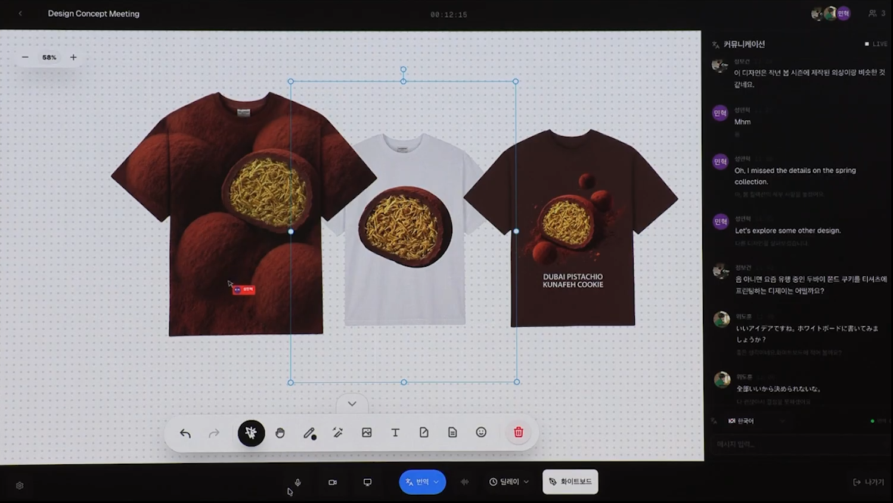
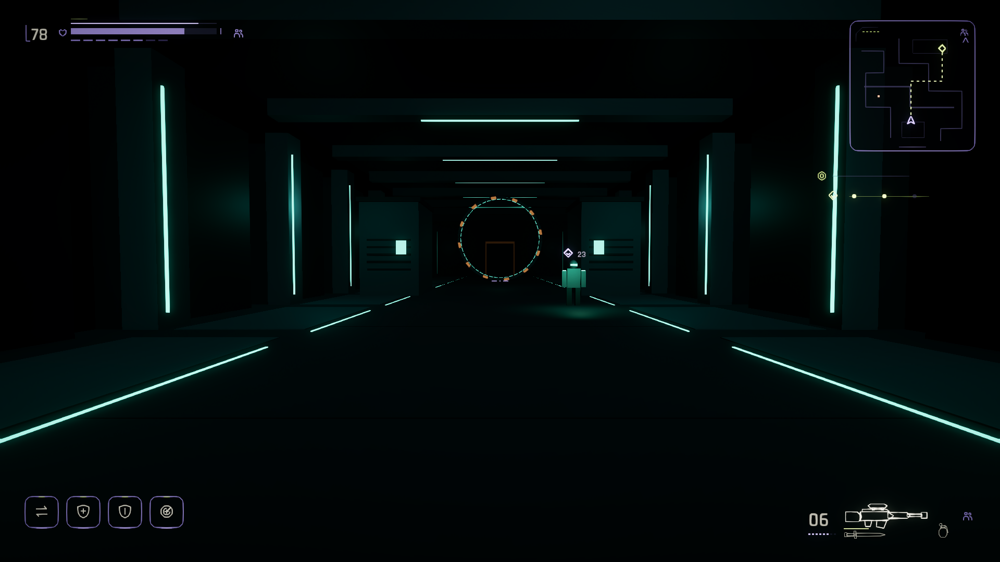
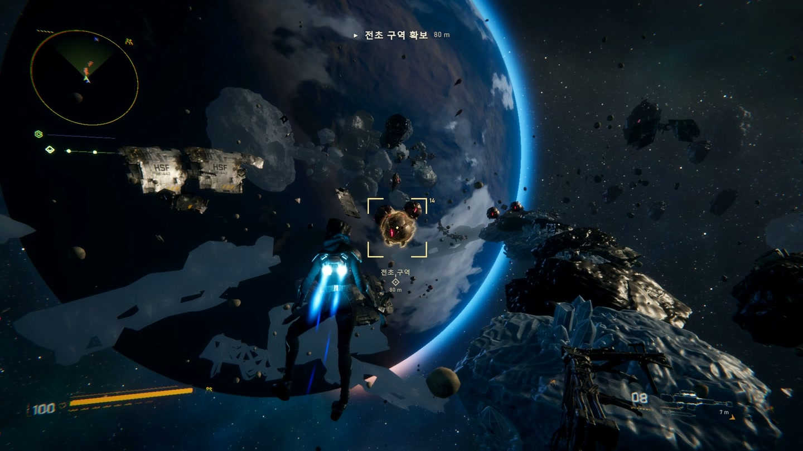

최신 요청만 반영
이전 조건으로 보낸 요청은 늦게 도착해도 현재 목록을 바꾸지 않습니다.
김가람 · Garam Kim
AX · AI Native
실제 업무에서 사용하는 관리자 기능을 개선했습니다.
검색 조건을 바꿨는데 이전 요청의 결과가 늦게 도착해 목록을 덮었습니다. 통계와 목록의 업무 상태 분류도 달랐습니다.
검색·필터·페이지네이션 구현, 집계 기준과 응답 처리 개선.
이전 조건으로 보낸 요청은 늦게 도착해도 현재 목록을 바꾸지 않습니다.
통계는 전체 업무, 목록은 현재 필터를 기준으로 계산합니다. 진행 중 업무도 일관되게 집계합니다.
날짜 오류·대상 누락·처리 실패를 나눠 다음 행동을 판단할 수 있게 했습니다.
관리자 PR #898 · 비공개 저장소
사내 코드·운영 화면을 제외하고 처리 원리를 정리했습니다.
AI 번역 화상회의와 실시간 화이트보드를 함께 쓰는 협업 서비스입니다.
영상통화와 드로잉을 함께 쓰면 화면 반응이 느려지고 선이 꺾였습니다. 렌더링·입력·전송을 나눠 원인을 다뤘습니다.
드로잉 렌더러, 실시간 동기화, 포스트잇과 권한 등 화이트보드 기능.

대학생의 경험을 문서로 정리하고 커피챗·프로젝트로 연결하는 플랫폼입니다.
AI의 생성 결과와 사용자 편집이 같은 흐름에 섞이면 오래된 결과가 반영되거나 직접 고친 코드가 사라질 수 있습니다.
명세·구현·검증에 참여하고, 수상 후 AI 스튜디오의 데이터 일관성과 편집 경험을 개선했습니다.

작업 실행, 문서 저장, 공개 여부를 별도 상태로 관리합니다.
저장 직전 원본 변경 여부를 확인하고 바뀐 영역만 갱신해 사용자 코드와 레이아웃을 보존합니다.
생성 코드의 실행 영역을 격리하고 접근 가능한 자원을 제한합니다.
국민대·숭실대·순천향대 연합 경진대회
편집·안정성 개선은 수상 이후 작업을 포함합니다. 무료 서버의 첫 응답 지연은 남아 있습니다.
우주 잔해를 건너던 두 파일럿의 슈트가 고장납니다. 내 화면에 동료의 정보가 뜨고, 내가 누른 키로 동료의 스킬이 발동합니다.
4명이 24시간 동안 기획안, 그래픽, 사운드, 코드를 모두 AI로 생성해 플레이 가능한 협동 게임을 만드는 데 도전했습니다. 생성한 3D 메시에서는 모서리와 파츠 경계가 뭉개져, 그대로 씬에 넣으면 물체의 형태를 알아보기 어려웠습니다.
개발 전반을 맡았습니다. AI로 만든 에셋을 Unity HDRP 아레나에 통합하고, 동료 AI·팀 무전·교차 HUD를 타이틀부터 협동 미션까지 이어지는 흐름으로 연결했습니다.


여러 메시 생성 방식을 비교한 뒤 형태가 무너진 부분만 다시 생성했습니다. 각 파츠를 확인하고 쓸 수 있는 것부터 조립했습니다.
바리케이드에는 고밀도 메시를 복원하고 다른 메시를 다듬을 때는 모서리를 보존했습니다. 2K·4K 노멀 맵과 컬러 텍스처로 표면 디테일을 되살렸습니다.
씬의 배치, 에셋 참조, 충돌체를 유지한 채 모델을 교체했습니다. Unity 검증을 통과한 프리팹은 64개이며, 그중 52개에 노멀 맵을 적용했습니다.
2026년 11월 19일 공개 빌드 · 4개 구역, 12개 웨이브
혼자서는 AI 동료와 출격하고, 같은 네트워크의 두 플레이어는 6자리 방 코드로 합류합니다.
게임을 만들며 시작했습니다. 지금은 AI가 쓰이는 제품을 만듭니다.
TypeScript · Next.js · Python
PixiJS · WebGPU · WebGL
C · C# · Unity · PintOS
Garam Kim · Problem Solver
2026년 두 학기 4,722개 분반을 학기·학과별로 선택할 수 있게 했습니다. 시간이 미등록된 108개 분반은 목록에 남기고 추천에서 제외했습니다.
지원자가 이력서와 포트폴리오를 각각 링크나 파일로 낼 수 있게 지원서를 개편했습니다. 자료가 빠지면 제출 전에 해당 입력란에 표시합니다.